{kind=link}

(Bryce Herdt)
1. An isosceles right trapezoid is a trapezoid having angles of 45o, 90o, 90o, and 135o. Given an isosceles right trapezoid with 3 integer sides, what is the smallest rectangle (in terms of area) that it and larger copies of it can tile so that at least one copy is rotated 45o?
2. Suppose we have n equations of the form X + Y = Z, where X, Y, and Z are each one of n unknowns. Can we always find distinct unknown shapes that make the equations true? When n=1, the only possible equation is A + A = A. There are 9 inequivalent sets of equations when n=2. Can you find solutions for all of them? How many sets of equations are there for n=3? How many can you find solutions for?
3. It is well-known that the only squares that can be tiled by squares of sides a and b are those that have sides that are a multiple of a or b. Given squares of integer sides a, b, and c, where no two sides have a common factor, what is the smallest square length that is not a multiple of a, b, or c that can be tiled with these squares?
4. Polyominoes that do not contain any 2×2 squares can be divided into equivalence classes based on the shape and ignoring the length of their segments. Given an equivalence class, which we call a stretchomino, what is the smallest rectangle that can be tiled by members of it? What of the polyomino classes with 5 segments have solutions? What are the smallest solutions possible? How about larger polyominoes?
5. Given a n-omino P, we say the extensions of P are the (n+1)-ominoes that cover P. These are precisely all the different ways to add one more square to P. Are there any polyominoes P (besides the monomino) with the property that the extensions of P tile a rectangle, using each one exactly once?
We will say a n×m trapezoid (n<m) is an n×m rectangle with a slice removed, leaving a trapezoid with horizontal bases of m and m–n. Thus this a tiling of 1×2 trapezoids:
And here is a tiling of 1×3 trapezoids:
Bryce Herdt also found tilings of 2×(2n+1) trapezoids like this:
Though I intended for all the trapezoids to be scaled by integers or √2 times integers of the smallest trapezoid, Andrew Bayly found the best solutions of a certain form without that assumption. His results can be seen here. One of these was also found by Berend van der Zwaag. Some of these satisfy the conditions of my intentions, especially those involving two stacked trapezoids on the left and right, and two rotated in the middle.
Bryce Herdt suggested adding smaller trapezoids along one edge of these types of tilings to make them satisfy these conditions, like the one below:
In 2014, George Sicherman found tilings of 1×3, 1×4, 3×4, 2×5, and 4×5 trapezoids, though Bryce Herdt's 1×3 solution is smaller:
| 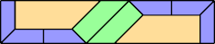 (George Sicherman) |  (George Sicherman) | 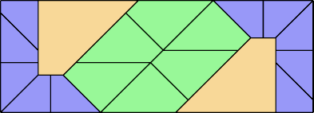 (George Sicherman) |
 (George Sicherman) | 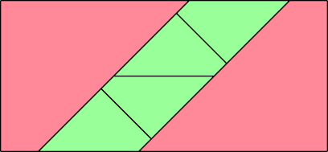 (George Sicherman) |
2.
Here are possible answers for n=2:
| Equations | Figures | |
|---|---|---|
| A + A = A A + A = B | 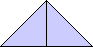 | 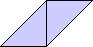 |
| A + A = A A + B = A | 
| |
| A + A = A A + B = B | 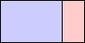 | |
| A + A = A B + B = A | 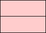 | |
| A + A = A B + B = B | 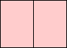 | |
| A + A = B A + B = A | 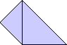 |
|
| A + A = B A + B = B | 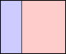 | |
| A + A = B B + B = A | 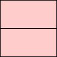 | |
| A + B = A A + B = B | 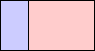 | 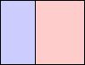 |
Since there are so many sets of equations for n=3, Bryce Herdt thought that we should only show inseparable sets equations with at least 2 occurrences of every shape.
Here are the 10 sets of 3 equations in 2 unknowns:
| Equations | Figures | Author | ||
|---|---|---|---|---|
| A + A = A A + A = B A + B = A | | Erich Friedman | ||
| A + A = A A + A = B A + B = B | 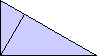 | Bryce Herdt | ||
| A + A = A A + A = B B + B = A | Bryce Herdt | |||
| A + A = A A + A = B B + B = B | Bryce Herdt | |||
| A + A = A A + B = A A + B = B | 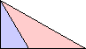 | Bryce Herdt | ||
| A + A = B A + B = A A + B = B | Bryce Herdt | |||
| A + A = A A + B = A B + B = A | ? | ? | ? | ? |
| A + A = A A + B = A B + B = B | ? | ? | ? | ? |
| A + A = B A + B = A B + B = A | 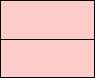 | Erich Friedman | ||
| A + A = B A + B = A B + B = B | 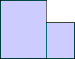 | 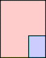 | 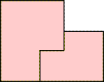 | Bryce Herdt |
Here are the 13 sets of inseparable 3 equations in 3 unknowns where each variable appears exactly 3 times:
| Equations | Figures | Author | ||
|---|---|---|---|---|
| A + A = B A + B = C B + C = C |  | 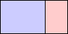 | 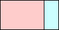 | Luke Pebody |
| A + A = B A + B = C C + C = B | 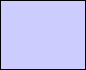 | 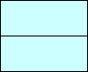 | Bryce Herdt | |
| A + A = B A + C = B B + C = C | 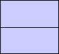 | 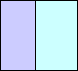 | 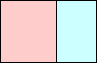 | Luke Pebody |
| A + A = B A + C = B C + C = B | 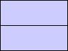 | 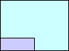 | 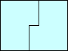 | Bryce Herdt |
| A + A = B A + C = C B + B = C | 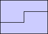 | 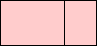 | Joe DeVincentis | |
| A + A = B A + C = C B + C = B | 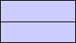 | 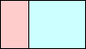 | Luke Pebody | |
| A + A = B B + C = A B + C = C | 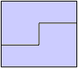 | 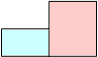 | 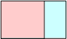 | Bryce Herdt |
| A + A = B B + C = A C + C = B | 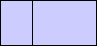 | Bryce Herdt | ||
| A + A = B B + B = C C + C = A | 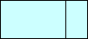 | Erich Friedman | ||
| A + B = A A + B = C B + C = C | 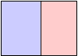 | 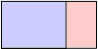 | 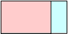 | Bryce Herdt |
| A + B = A A + C = B B + C = C | 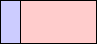 | 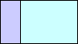 | 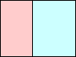 | Bryce Herdt |
| A + B = A A + C = C B + C = B | 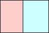 | Luke Pebody | ||
| A + B = C A + C = B B + C = A | 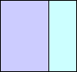 | 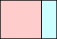 | Luke Pebody | |
3.
For a < b < c, let f(a,b,c) be the smallest square not divisible by a, b, or c that can be tiled with squares of side a, b, and c.
Joe DeVincentis proved that f(2,b,c)=c+2b. Put a square of side c in one corner, two (c–b)×(2b) rectangles made of 2×2 squares along those same sides, and fill the rest with squares of side b.
Dan Dima claimed that f(a,b,a+b) = f(a,b,ab–a–b) = ab+a+b. He also claimed f(3,b,c) < c+4b. He also gave a general upper bound based on some Diophantine equations.
Luke Pebody proved that f(a,b,c) ≤ max(ab+c , 2ab–c).
Here are the results for small a < b < c. The tilings seem to fall into 4 categories, which I have color-coded: yellow for "stacking" (containing two large squares of b's and c's in opposite corners, and two rectangles of length ab), blue for "twirling" (a square of c's in the middle, and four rectangles of length ab), purple for "interesting" (two squares in opposite corners and two slightly overlapping rectangles containing all 3 types of square), and red for "chaotic" (asymmetrical):
| a=3 | 5 | 7 | 8 | 10 | 11 | 13 | 14 |
|---|---|---|---|---|---|---|---|
| 4 | 19 | 19 | x | x | 23 | 25 | x |
| 5 | 23 | 23 | x | 26 | 28 | 29 | |
| 7 | 34 (GT) | 31 | 31 (BT) | 34 | x | ||
| 8 | x | 35 | 35 (BT) | x | |||
| 10 | 49 (BT) | 43 | x | ||||
| 11 | 53 (GS) | 47 | |||||
| 13 | 64 (BT) |
| a=4 | 7 | 9 | 11 | 13 | 15 |
|---|---|---|---|---|---|
| 5 | 33 (BH) | 29 | 29 (BT) | 33 | x |
| 7 | 43 (BT) | 39 | 43 (BT) | 43 | |
| 9 | 53 (BT) | 49 | x | ||
| 11 | 63 (GS) | 59 | |||
| 13 | 73 (BT) |
| a=5 | 7 | 8 | 9 | 11 | 12 | 13 | 14 |
|---|---|---|---|---|---|---|---|
| 6 | 38 (BT) | x | x | 41 | x | 47 (BT) | x |
| 7 | 54 (GS) | 46 (BT) | 54 (BT) | 47 | 57 (BT) | x | |
| 8 | 51 (BT) | 54 (BT) | x | 53 | x | ||
| 9 | 68 (BT) | x | 62 (BT) | 59 | |||
| 11 | 68 (BT) | 71 (GS) | 82 (BT) | ||||
| 12 | 94 (GS) | x | |||||
| 13 | 81 (BT) |
| a=6 | 11 | 13 |
|---|---|---|
| 7 | 62 (BT) | 55 |
| 11 | 101 (GS) |
| a=7 | 9 | 10 | 11 | 12 | 13 | 15 |
|---|---|---|---|---|---|---|
| 8 | 59 (BT) | x | 65 (BT) | x | 86 (BT) | 71 |
| 9 | 86 (BT) | 68 (BT) | x | 93 (BT) | x | |
| 10 | 93 (BT) | x | 79 (BT) | x | ||
| 11 | 102 (BT) | 102 (BH) | 89 (BT) | |||
| 12 | 87 (BT) | x | ||||
| 13 | 132 (GS) |
| a=8 | 11 | 13 | 15 |
|---|---|---|---|
| 9 | 89 (BT) | 79 (BT) | x |
| 11 | 116 (GS) | 93 (BT) | |
| 13 | 133 (BT) |
| a=9 | 11 | 13 | 14 |
|---|---|---|---|
| 10 | 84 (BT) | 124 (BH) | x |
| 11 | 96 (BT) | 128 (BT) | |
| 13 | 133 (BT) |
| a=10 | 13 |
|---|---|
| 11 | 138 (BT) |
| a=11 | 13 | 14 | 15 |
|---|---|---|---|
| 12 | 113 (BT) | x | x |
| 13 | 159 (GS) | 127 (BT) | |
| 14 | 172 (BT) |
| a=13 | 15 |
|---|---|
| 14 | 146 (BT) |
4.
Here are possible answers for stretchominoes with 6 or fewer segments:
| 1 | 2 | 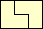 | 3 | 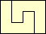 | 4 | (George Sicherman) |
| 5 |
(George Sicherman) | (George Sicherman) | (George Sicherman) |
| 6 | (George Sicherman) | (George Sicherman) | (George Sicherman) | (George Sicherman) | (George Sicherman) | (George Sicherman) |
(George Sicherman) | (George Sicherman) | (George Sicherman) | (George Sicherman) |
(George Sicherman) | (George Sicherman) | (George Sicherman) | (George Sicherman) | (George Sicherman) |
(George Sicherman) |  (George Sicherman) | (George Sicherman) |
(George Sicherman) | (George Sicherman) | (George Sicherman) | (George Sicherman) |
(George Sicherman) | (George Sicherman) | (George Sicherman) |
(George Sicherman) | (George Sicherman) | (George Sicherman) | (George Sicherman) |
George Sicherman also investigated the 7-stretchominoes:
George Sicherman also investigated the 8-stretchominoes:
George Sicherman also investigated the stretchable polylines:
| 1 | 2 | 3 | 4 |
| 5 |
 |
5.
George Sicherman found all the polyominoes with area 10 or less that have extension tilings, shown below:
L4 | L5 | F6 | P6 |
P7 | P8 | Q8 | P10 |
If you can extend any of these results, please e-mail me. Click here to go back to Math Magic. Last updated 4/10/16.
{kind=link}
{kind=link}
{kind=link}
{kind=link}
{kind=link}
{kind=link}
{kind=link}
{kind=link}
{kind=link}
{kind=link}
{kind=link}
{kind=link}
{kind=link}
{kind=link}
{kind=link}
{kind=link}
{kind=link}
{kind=link}
{kind=link}
{kind=link}
{kind=link}
{kind=link}
{kind=link}
{kind=link}
{kind=link}
{kind=link}
{kind=link}
{kind=link}
{kind=link}
{kind=link}
{kind=link}
{kind=link}
{kind=link}
{kind=link}
{kind=link}
{kind=link}
{kind=link}
{kind=link}
{kind=link}
{kind=link}
{kind=link}
{kind=link}
{kind=link}
{kind=link}
{kind=link}
{kind=link}
{kind=link}
{kind=link}
{kind=link}
{kind=link}
{kind=link}
{kind=link}
{kind=link}
{kind=link}
{kind=link}
{kind=link}
{kind=link}
{kind=link}
{kind=link}
{kind=link}
{kind=link}
{kind=link}
{kind=link}
{kind=link}
{kind=link}
{kind=link}
{kind=link}
{kind=link}
{kind=link}
{kind=link}
{kind=link}
{kind=link}
{kind=link}
{kind=link}
{kind=link}
{kind=link}
{kind=link}
{kind=link}
{kind=link}
{kind=link}
{kind=link}
{kind=link}
{kind=link}
{kind=link}
{kind=link}